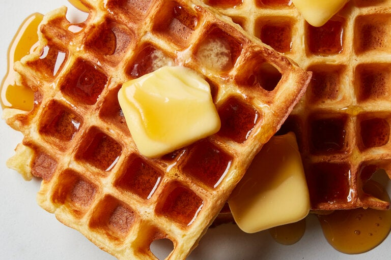

Waffles

Description
If you follow this recipe, using your waffle iron you'll be able to make 6 waffles in just around
25 minutes.
Ingredients
- 2 cups of all-purpose flour
- 1 3/4 cups of milk
- 1/2 cup of vegetable oil
- 1 tablespoon of white sugar
- 4 teaspoons of baking powder
- 1/2 teaspoon of vanilla extract
- 1/4 teaspoon of salt
- 2 large eggs
- nonstick cooking spray
Steps
- Preheat a waffle iron (according to manufacturer's instructions)
- Whisk the eggs in a large bowl.
- Add flour, milk, and vegetable oil. Mix to combine.
- Whisk in sugar, then mix in baking powder, salt and vanilla just until smooth
(be careful not to overmix).
- Spray the waffle iron with nonstick spray.
- Pour the batter onto the waffle iron until golden brown and the iron stops steaming
(3 to 5 minutes).
And you're done!